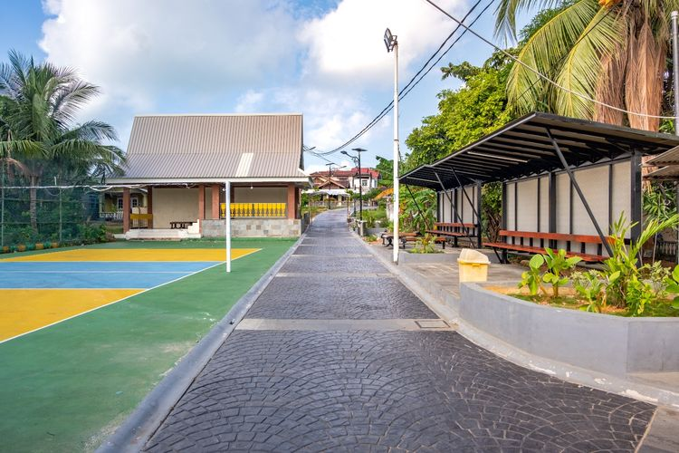
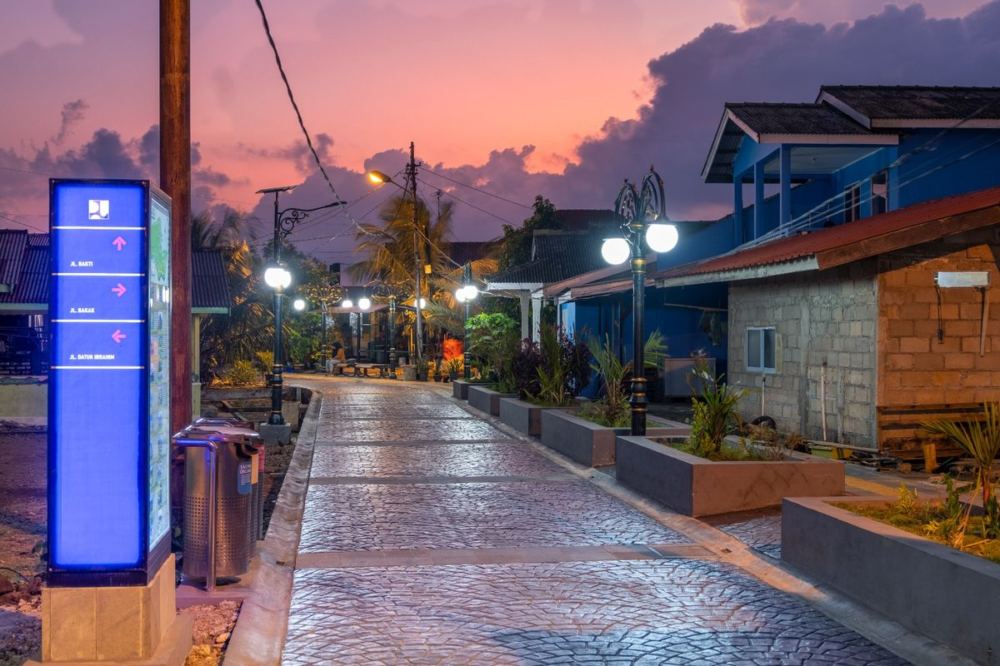

JAKARTA, KOMPAS.com - Kementerian Pekerjaan Umum (PU) melakukan penataan kawasan Pulau Penyengat di Kota Tanjungpinang, Provinsi Kepulauan Riau, untuk memperkuat fungsi pulau tersebut sebagai destinasi wisata budaya Melayu sekaligus meningkatkan kualitas lingkungan. Pulau Penyengat dikenal sebagai salah satu pusat sejarah dan kebudayaan Melayu, dengan berbagai warisan bersejarah seperti Masjid Sultan Riau yang menjadi ikon wisata religi dan budaya di wilayah tersebut.
Melalui Balai Penataan Bangunan, Prasarana dan Kawasan Kepulauan Riau, Direktorat Jenderal (Ditjen) Cipta Karya, penataan kawasan dilakukan secara bertahap sejak 2022 dan telah menjangkau area seluas 25 hektar yang sebelumnya teridentifikasi sebagai kawasan kumuh. Memasuki tahap lanjutan pada 2025, penataan difokuskan pada penguatan identitas Pulau Penyengat sebagai destinasi wisata budaya
Intervensi dilakukan melalui penataan Plaza Penyambut Tamadun Melayu, pelataran balai adat, penataan lanskap kawasan, pembangunan ruang cerita (storytelling dan artwork), serta peningkatan kualitas jalan lingkungan.

Tata Air Minum hingga Septic Tank
Penanganan dilakukan melalui pendekatan terpadu, mencakup peningkatan infrastruktur dasar seperti jalan lingkungan, jaringan drainase, hingga penyediaan air minum melalui Sistem Penyediaan Air Minum (SPAM) Sea Water Reverse Osmosis (SWRO). Selain itu, dibangun pula Tempat Pengolahan Sampah Reduce-Reuse-Recycle (TPS3R), pengelolaan air limbah domestik melalui septic tank komunal, serta penyediaan ruang terbuka publik.
Perbaikan tersebut memberikan dampak langsung bagi masyarakat, antara lain mempermudah mobilitas warga dan wisatawan, mengurangi genangan, serta meningkatkan kualitas sanitasi dan kesehatan lingkungan. Kondisi kawasan yang lebih tertata juga mendorong terciptanya lingkungan yang lebih bersih dan nyaman bagi masyarakat pesisir.
Dorong Peningkatan Ekonomi
Menteri PU Dody Hanggodo mengatakan pembangunan infrastruktur kawasan tidak hanya bertujuan memperbaiki kondisi fisik wilayah, tetapi juga menjadi instrumen sosial dan ekonomi untuk memperkuat ketahanan masyarakat. "Melalui penataan kawasan, kita memastikan layanan dasar, seperti air minum, sanitasi, dan ruang publik, benar-benar dirasakan manfaatnya oleh masyarakat," ujar Dody, dikutip Senin (27/04/2026).
Penataan kawasan ini juga mendorong tumbuhnya aktivitas ekonomi lokal seiring meningkatnya kunjungan wisata dan berkembangnya layanan wisata berbasis masyarakat.
Program tersebut sejalan dengan Asta Cita Presiden Prabowo Subianto dalam mendorong pembangunan dari desa serta pemerataan ekonomi di berbagai wilayah. Kementerian PU berharap penataan kawasan Pulau Penyengat dapat terus berlanjut secara berkelanjutan, sehingga tidak hanya meningkatkan kualitas lingkungan, tetapi juga memperkuat peran kawasan sebagai pusat pelestarian budaya Melayu dan destinasi wisata unggulan di Kepulauan Riau.